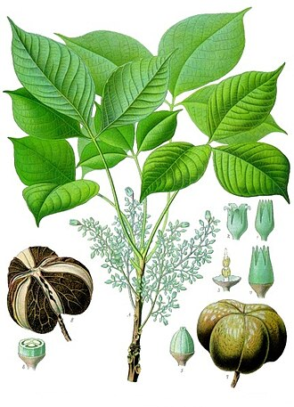

Break down dead plants
How this trait became 2 genes to order.
All 37 genes · How the search works · Every trait
1. What this trait needs done
A trait is rarely one thing. Each job below needs its own protein.
| Job | What we search for | Why it is a separate job |
|---|---|---|
| Chew up tough plant stalks and leaves | cellulase, cellobiohydrolase,
endoglucanase |
cellulose is most of a dead plant |
| Chew up fungus threads and insect shells | chitinase, chitin deacetylase |
chitin is fungal walls and insect shells – a different molecule that cellulase cannot touch |
Term source: UniProt KW-0136 Cellulose degradation
Term source: UniProt KW-0147 Chitin-binding, KW Chitin degradation
Term source: added by hand – wood-rot enzymes
Term source: added by hand – plant cell-wall enzymes
2. What the search returned
| Search term | Proteins found |
|---|---|
endoglucanase |
176 |
cellulase |
140 |
chitinase |
108 |
cellobiohydrolase |
23 |
chitin deacetylase |
14 |
321 different proteins once duplicates are removed.
3. What was thrown out
| Rule it broke | How many |
|---|---|
| comes from a germ that makes people ill | 60 |
| name contains “inhibitor” | 4 |
257 survived.
All 64 rejected proteins
| Protein | From | Found by | Rejected because |
|---|---|---|---|
| AA9 family lytic polysaccharide monooxygenase B | Emericella nidulans | cellulase, endoglucanase | comes from a germ that makes people ill |
| AA9 family lytic polysaccharide monooxygenase B | Aspergillus fumigatus | cellulase, endoglucanase | comes from a germ that makes people ill |
| Endo-beta-1,4-glucanase A | Emericella nidulans | cellulase, endoglucanase | comes from a germ that makes people ill |
| Endo-beta-1,4-glucanase B | Emericella nidulans | cellulase, endoglucanase | comes from a germ that makes people ill |
| Endo-beta-1,4-glucanase celB | Emericella nidulans | cellulase, endoglucanase | comes from a germ that makes people ill |
| Endoglucanase type C | Fusarium oxysporum | cellulase, endoglucanase | comes from a germ that makes people ill |
| AA9 family lytic polysaccharide monooxygenase AA17 | Aspergillus oryzae | cellulase, endoglucanase | comes from a germ that makes people ill |
| AA9 family lytic polysaccharide monooxygenase F | Aspergillus tamarii | cellulase, endoglucanase | comes from a germ that makes people ill |
| AA9 family lytic polysaccharide monooxygenase A | Gibberella zeae | cellulase, endoglucanase | comes from a germ that makes people ill |
| AA9 family lytic polysaccharide monooxygenase B | Aspergillus tamarii | cellulase, endoglucanase | comes from a germ that makes people ill |
| AA9 family lytic polysaccharide monooxygenase A | Aspergillus fumigatus | cellulase, endoglucanase | comes from a germ that makes people ill |
| AA9 family lytic polysaccharide monooxygenase C | Emericella nidulans | cellulase, endoglucanase | comes from a germ that makes people ill |
| AA9 family lytic polysaccharide monooxygenase A | Aspergillus tamarii | cellulase, endoglucanase | comes from a germ that makes people ill |
| AA9 family lytic polysaccharide monooxygenase C | Aspergillus fumigatus | cellulase, endoglucanase | comes from a germ that makes people ill |
| AA9 family lytic polysaccharide monooxygenase F | Emericella nidulans | cellulase, endoglucanase | comes from a germ that makes people ill |
| AA9 family lytic polysaccharide monooxygenase D | Emericella nidulans | cellulase, endoglucanase | comes from a germ that makes people ill |
| AA9 family lytic polysaccharide monooxygenase G | Aspergillus tamarii | cellulase, endoglucanase | comes from a germ that makes people ill |
| AA9 family lytic polysaccharide monooxygenase G | Emericella nidulans | cellulase, endoglucanase | comes from a germ that makes people ill |
| AA9 family lytic polysaccharide monooxygenase A | Aspergillus oryzae | cellulase, endoglucanase | comes from a germ that makes people ill |
| Endo-beta-1,4-glucanase B | Aspergillus niger | cellulase, endoglucanase | comes from a germ that makes people ill |
| Endo-beta-1,4-glucanase celB | Aspergillus oryzae | cellulase, endoglucanase | comes from a germ that makes people ill |
| Endoglucanase-1 | Aspergillus aculeatus | cellulase, endoglucanase | comes from a germ that makes people ill |
| AA9 family lytic polysaccharide monooxygenase E | Aspergillus tamarii | cellulase, endoglucanase | comes from a germ that makes people ill |
| AA9 family lytic polysaccharide monooxygenase D | Aspergillus tamarii | cellulase, endoglucanase | comes from a germ that makes people ill |
| AA9 family lytic polysaccharide monooxygenase C | Aspergillus tamarii | cellulase, endoglucanase | comes from a germ that makes people ill |
| Probable cellulase Cel12b | Mycobacterium tuberculosis | cellulase | comes from a germ that makes people ill |
| 1,4-beta-D-glucan cellobiohydrolase C | Emericella nidulans | cellobiohydrolase | comes from a germ that makes people ill |
| Probable 1,4-beta-D-glucan cellobiohydrolase B | Aspergillus fumigatus | cellobiohydrolase | comes from a germ that makes people ill |
| Chitinase 1 | Yersinia entomophaga | chitinase | comes from a germ that makes people ill |
| Chitinase | Plasmodium falciparum | chitinase | comes from a germ that makes people ill |
| Chitinase 1 | Rhizopus oligosporus | chitinase | comes from a germ that makes people ill |
| Chitinase 2 | Rhizopus oligosporus | chitinase | comes from a germ that makes people ill |
| Chitinase 3 | Candida albicans | chitinase | comes from a germ that makes people ill |
| Chitinase 2 | Yersinia entomophaga | chitinase | comes from a germ that makes people ill |
| Chitinase 2 | Candida albicans | chitinase | comes from a germ that makes people ill |
| Chitinase 1 | Candida albicans | chitinase | comes from a germ that makes people ill |
| Chitinase-like protein CLP1 | Toxoplasma gondii | chitinase | comes from a germ that makes people ill |
| Endochitinase B1 | Aspergillus fumigatus | chitinase | comes from a germ that makes people ill |
| Endochitinase A1 | Aspergillus fumigatus | chitinase | comes from a germ that makes people ill |
| Endochitinase A | Emericella nidulans | chitinase | comes from a germ that makes people ill |
| Crh-like protein 2 [Includes: Chitinase crh2 | Aspergillus fumigatus | chitinase | comes from a germ that makes people ill |
| Crh-like protein 5 | Aspergillus fumigatus | chitinase | comes from a germ that makes people ill |
| Crh-like protein UTR2 | Candida albicans | chitinase | comes from a germ that makes people ill |
| Crh-like protein CRH11 | Candida albicans | chitinase | comes from a germ that makes people ill |
| Crh-like protein CRH12 | Candida albicans | chitinase | comes from a germ that makes people ill |
| Chitinase | Enterococcus faecalis | chitinase | comes from a germ that makes people ill |
| Endochitinase B | Emericella nidulans | chitinase | comes from a germ that makes people ill |
| Endochitinase B | Emericella nidulans | chitinase | comes from a germ that makes people ill |
| Polyglycine hydrolase | Fusarium vanettenii | chitinase | comes from a germ that makes people ill |
| Crh-like protein ARB_05253 [Includes: Chitinase ARB_ | Arthroderma benhamiae | chitinase | comes from a germ that makes people ill |
| Chitinase B | Serratia marcescens | chitinase | comes from a germ that makes people ill |
| Chitinase A | Serratia marcescens | chitinase | comes from a germ that makes people ill |
| Probable class II chitinase ARB_00204 | Arthroderma benhamiae | chitinase | comes from a germ that makes people ill |
| Class III chitinase ARB_03514 | Arthroderma benhamiae | chitinase | comes from a germ that makes people ill |
| Chitin deacetylase 3 | Cryptococcus neoformans | chitin deacetylase | comes from a germ that makes people ill |
| Chitin deacetylase 2 | Cryptococcus neoformans | chitin deacetylase | comes from a germ that makes people ill |
| Chitin deacetylase 1 | Cryptococcus neoformans | chitin deacetylase | comes from a germ that makes people ill |
| Chitin deacetylase | Emericella nidulans | chitin deacetylase | comes from a germ that makes people ill |
| Chitin deacetylase 2 | Cryptococcus deneoformans | chitin deacetylase | comes from a germ that makes people ill |
| Chitin deacetylase | Amylomyces rouxii | chitin deacetylase | comes from a germ that makes people ill |
| Xylanase inhibitor protein 1 | Triticum aestivum | chitinase | name contains “inhibitor” – it BLOCKS this trait instead of doing it |
| Xylanase inhibitor protein 2 | Oryza sativa subsp. japoni | chitinase | name contains “inhibitor” – it BLOCKS this trait instead of doing it |
| Xylanase inhibitor protein XIP | Oryza sativa subsp. japoni | chitinase | name contains “inhibitor” – it BLOCKS this trait instead of doing it |
| Xylanase inhibitor protein 1 | Oryza sativa subsp. japoni | chitinase | name contains “inhibitor” – it BLOCKS this trait instead of doing it |
4. How the winner is picked
From the survivors, one protein per job. Ties break in this order:
- nothing rules it out
- the term it matched sits higher in the job’s list
- not an over-studied lab organism
- better curation score
- shorter, because you pay per letter of DNA
5. The 2 genes to order
Hevamine-A [Includes: Chitinase
- Job: Chew up fungus threads and insect shells
- From:

Hevea brasiliensis - Size: 311 amino acids → 936 letters of DNA
- UniProt: P23472
Sequences
Protein:
MAKRTQAILLLLLAISLIMSSSHVDGGGIAIYWGQNGNEGTLTQTCSTRKYSYVNIAFLNKFGNGQTPQINLAGHCNPAAGGCTIVSNGIRSCQIQGIKVMLSLGGGIGSYTLASQADAKNVADYLWNNFLGGKSSSRPLGDAVLDGIDFDIEHGSTLYWDDLARYLSAYSKQGKKVYLTAAPQCPFPDRYLGTALNTGLFDYVWVQFYNNPPCQYSSGNINNIINSWNRWTTSINAGKIFLGLPAAPEAAGSGYVPPDVLISRILPEIKKSPKYGGVMLWSKFYDDKNGYSSSILDSVLFLHSEECMTVLDNA to order:
ATGGCTAAGCGTACTCAGGCTATCTTGCTCTTGCTCTTGGCTATCTCCTTGATCATGTCCTCCTCCCACGTTGATGGTGGTGGTATTGCTATCTACTGGGGTCAAAATGGTAACGAGGGCACCTTGACCCAGACTTGTTCTACTAGAAAGTACTCCTACGTCAACATCGCCTTCCTCAACAAGTTCGGCAACGGTCAAACTCCTCAAATCAACCTCGCTGGTCACTGTAACCCTGCTGCTGGTGGTTGTACTATCGTTTCTAACGGTATCCGCTCTTGTCAGATCCAGGGCATCAAGGTCATGCTCTCTTTAGGTGGTGGTATCGGTTCTTACACCCTCGCTTCTCAGGCTGATGCTAAAAACGTCGCTGATTACCTCTGGAATAACTTCCTCGGCGGCAAGTCCTCTTCTAGACCTCTCGGTGATGCTGTTTTAGATGGTATCGACTTCGACATCGAGCACGGTTCCACCCTCTACTGGGATGATTTAGCTAGATACCTCTCTGCTTACTCCAAGCAGGGCAAGAAGGTCTACCTCACTGCTGCTCCTCAATGTCCTTTTCCTGATCGTTACCTCGGTACTGCTTTGAACACCGGCCTCTTTGACTACGTTTGGGTTCAATTCTACAACAACCCCCCTTGTCAGTACTCCTCCGGTAACATCAACAACATCATCAACTCCTGGAACCGCTGGACTACTTCCATCAACGCCGGTAAAATCTTCTTGGGTTTGCCTGCTGCTCCTGAAGCTGCTGGTTCTGGTTACGTTCCTCCTGATGTTTTAATCTCCCGCATCCTCCCTGAGATCAAGAAGTCCCCTAAGTACGGCGGTGTTATGTTATGGTCCAAGTTCTACGACGACAAGAACGGCTACTCCTCCTCCATCTTGGATTCTGTCTTGTTCCTCCACTCTGAAGAGTGCATGACCGTCCTCTAACellulase 1
- Job: Chew up tough plant stalks and leaves
- From: Streptomyces reticuli
- Size: 746 amino acids → 2241 letters of DNA
- UniProt: Q05156
Sequences
Protein:
MKRRTTAVLTLTALLGTALTALPVQQAGAEEVEQVRNGTFDTTTDPWWTSNVTAGLSDGRLCADVPGGTTNRWDSAIGQNDITLVKGETYRFSFHASGIPEGHVVRAVVGLAVSPYDTWQEASPVLTEADGSYSYTFTAPVDTTQGQVAFQVGGSTDAWRFCVDDVSLLGGVPPEVYEPDTGPRVRVNQVAYLPAGPKNATLVTDATARLPWQLRNAQGTTVARGLTVPRGVDASSGQNVHSIDFGSYRGRGTGYTLVADGETSHPFDIDAAAYRPLRLDSVKYYYTQRSGIAIRDDLRPGYGRAAGHLNVAPNQGDANVPCQPGVCDYTLDVTGGWYDAGDHGKYVVNGGIATWELLSTYERSLTARTGHPAALGDGTLALPESGNKVPDVLDEARWELEFLLKMQVPAGQPLAGMAHHKLHDEQWTGLPLLPDQDPQKRELHPPTTAATLNLAATAAQAARLYRPFDKAFAARALTAARTAWQAALAHPDLLADPNDGTGGGAYNDDDVTDEFYWAAAELYLTTGERQFADHVLDSPVHTADIFGPTGFDWGHTAAAGRLDLALVPSRLPGRDQVRRSVIKAADTYLATLTAHPYGMPYAPAGNRYDWGSSHQVLNNGVVLASAYDLTGAAKYRDGALQGMDYVLGRNALNMSYVTGYGEVSSHNQHSRWYAHQLDPTLPNPPSGTLAGGPNSSIQDPYAQSKLTGCVGQFCYIDDIQSWSTNETAINWNAALARMASFAADQGDNA to order:
ATGAAGCGTCGTACTACCGCTGTTTTGACCTTGACCGCTTTGTTGGGTACTGCTTTGACCGCTTTACCCGTCCAACAAGCTGGTGCTGAAGAAGTTGAACAGGTTAGAAACGGCACTTTCGACACCACCACCGACCCTTGGTGGACTTCTAATGTTACTGCTGGTTTATCCGATGGTCGTCTCTGCGCTGACGTCCCTGGTGGTACTACTAATAGATGGGATTCTGCTATCGGTCAGAACGACATCACCCTCGTCAAGGGTGAAACTTACAGATTCTCCTTCCACGCTTCCGGTATTCCCGAGGGTCATGTCGTTAGAGCTGTTGTTGGTTTAGCTGTTTCCCCTTACGACACCTGGCAGGAGGCTTCTCCTGTTTTAACTGAAGCTGATGGTTCTTACTCCTACACCTTCACCGCCCCCGTCGATACTACTCAAGGTCAAGTTGCTTTTCAAGTTGGTGGTTCCACCGACGCCTGGAGATTCTGTGTCGATGATGTTTCTTTGTTGGGTGGTGTTCCCCCTGAGGTCTACGAACCTGACACTGGTCCTAGAGTTAGAGTTAACCAAGTCGCCTACCTCCCTGCTGGTCCTAAAAACGCTACCTTAGTCACTGATGCTACTGCTCGTCTCCCTTGGCAGTTGAGAAACGCTCAAGGTACTACTGTTGCTAGAGGTCTCACCGTTCCCAGAGGTGTTGATGCTTCTTCTGGTCAAAACGTTCACTCCATCGACTTCGGCTCCTACCGTGGTAGAGGTACTGGTTATACTTTGGTTGCTGACGGTGAAACCTCCCACCCTTTCGACATCGACGCTGCTGCTTATAGACCTTTACGTTTAGACTCCGTCAAGTACTACTACACCCAGCGCTCCGGTATCGCTATTAGAGATGATCTCCGTCCTGGTTATGGTAGAGCTGCTGGCCATCTCAACGTTGCTCCTAATCAAGGTGACGCTAATGTTCCTTGCCAGCCCGGTGTTTGTGATTACACCTTGGATGTCACCGGTGGTTGGTATGATGCTGGCGACCATGGTAAATATGTCGTCAACGGTGGTATCGCTACCTGGGAATTGCTCTCCACCTACGAAAGATCTTTGACCGCTAGAACCGGTCATCCCGCTGCTTTAGGTGATGGTACTTTAGCTTTACCCGAATCTGGCAACAAGGTCCCCGACGTTCTCGATGAAGCTAGATGGGAATTGGAATTCCTCTTGAAGATGCAGGTCCCCGCCGGTCAACCTTTAGCTGGTATGGCTCATCATAAATTACACGACGAGCAGTGGACCGGCTTGCCTTTGTTGCCTGACCAAGATCCTCAAAAAAGAGAGTTGCACCCCCCTACCACTGCTGCTACTCTCAACTTGGCTGCTACTGCTGCTCAAGCTGCTAGATTATACCGCCCTTTCGATAAGGCTTTCGCTGCTCGTGCTTTGACCGCTGCTAGAACTGCTTGGCAAGCTGCTTTAGCTCATCCTGATTTGTTGGCCGACCCTAATGACGGTACCGGTGGTGGTGCTTATAATGACGATGATGTTACCGACGAGTTCTACTGGGCCGCTGCTGAGTTGTATTTGACCACTGGTGAAAGACAGTTCGCTGATCACGTCCTCGACTCCCCTGTTCATACTGCTGATATTTTCGGTCCTACCGGTTTCGACTGGGGTCACACCGCTGCTGCTGGTAGATTAGATTTAGCTTTGGTTCCTTCTCGCCTCCCTGGTCGTGACCAGGTTAGAAGATCTGTTATTAAGGCTGCTGATACCTACCTCGCCACCCTCACCGCTCATCCTTATGGTATGCCTTATGCTCCTGCTGGTAATAGATACGACTGGGGCTCCTCTCATCAAGTCTTGAACAACGGCGTCGTTTTAGCTTCTGCTTACGACCTCACCGGTGCTGCTAAATATCGTGACGGCGCTTTACAAGGTATGGATTACGTCCTCGGCCGTAACGCTTTAAACATGTCCTACGTCACCGGTTACGGTGAAGTTTCCTCCCACAACCAGCATTCTAGATGGTACGCTCACCAACTCGACCCTACTTTACCCAACCCTCCTTCTGGTACTTTAGCTGGTGGTCCTAACTCCTCTATCCAAGACCCTTACGCTCAGTCTAAGTTGACCGGTTGCGTTGGTCAATTCTGCTACATCGACGACATCCAGTCTTGGTCTACCAACGAGACCGCTATTAACTGGAACGCTGCTTTGGCTAGAATGGCTTCTTTCGCCGCTGACCAAGGTTAA6. The 255 we did not order
These passed every rule. Each job takes one protein, so the rest simply were not needed, and every extra gene costs the host energy.
See them all
| Protein | From | Length | Found by | Ruled out because |
|---|---|---|---|---|
| 1,4-beta-D-glucan cellobiohydrolase CEL6A | Pyricularia oryzae | 487 | cellobiohydrolase | |
| 1,4-beta-D-glucan cellobiohydrolase CEL6A | Podospora anserina | 484 | cellobiohydrolase | |
| 1,4-beta-D-glucan cellobiohydrolase CEL6B | Podospora anserina | 419 | cellobiohydrolase | |
| 1,4-beta-D-glucan cellobiohydrolase CEL6C | Podospora anserina | 398 | cellobiohydrolase | |
| 1,4-beta-D-glucan cellobiohydrolase xynA | Talaromyces funiculosus | 529 | cellobiohydrolase | |
| AA9 family lytic polysaccharide monooxygenase A | Panus similis | 254 | cellulase, endoglucanase | |
| AA9 family lytic polysaccharide monooxygenase A | Talaromyces verruculosus | 328 | cellulase, endoglucanase | |
| AA9 family lytic polysaccharide monooxygenase A | Penicillium parvum | 249 | cellulase, endoglucanase | |
| AA9 family lytic polysaccharide monooxygenase A | Achaetomiella virescens | 274 | cellulase, endoglucanase | |
| AA9 family lytic polysaccharide monooxygenase A | Talaromyces pinophilus | 310 | cellulase, endoglucanase | |
| AA9 family lytic polysaccharide monooxygenase A | Podospora anserina | 351 | cellulase, endoglucanase | |
| AA9 family lytic polysaccharide monooxygenase A | Thermothelomyces thermop | 225 | cellulase, endoglucanase | |
| AA9 family lytic polysaccharide monooxygenase A | Thermothelomyces thermop | 225 | cellulase, endoglucanase | |
| AA9 family lytic polysaccharide monooxygenase A | Geotrichum candidum | 288 | cellulase, endoglucanase | |
| AA9 family lytic polysaccharide monooxygenase A | Gloeophyllum trabeum | 321 | cellulase, endoglucanase | |
| AA9 family lytic polysaccharide monooxygenase A | Malbranchea cinnamomea | 334 | cellulase, endoglucanase | |
| AA9 family lytic polysaccharide monooxygenase A | Schizophyllum commune | 247 | cellulase, endoglucanase | |
| AA9 family lytic polysaccharide monooxygenase A | Phanerochaete carnosa | 264 | cellulase, endoglucanase | |
| AA9 family lytic polysaccharide monooxygenase A | Armillaria gallica | 249 | cellulase, endoglucanase | |
| AA9 family lytic polysaccharide monooxygenase A | Neurospora crassa | 322 | endoglucanase | |
| AA9 family lytic polysaccharide monooxygenase A | Thermothielavioides terr | 233 | endoglucanase | |
| AA9 family lytic polysaccharide monooxygenase AA9- | Coprinopsis cinerea | 342 | cellulase, endoglucanase | |
| AA9 family lytic polysaccharide monooxygenase AA9- | Trametes coccinea | 275 | cellulase, endoglucanase | |
| AA9 family lytic polysaccharide monooxygenase B | Thermothelomyces thermop | 323 | cellulase, endoglucanase | |
| AA9 family lytic polysaccharide monooxygenase B | Thermothelomyces thermop | 323 | cellulase, endoglucanase | |
| AA9 family lytic polysaccharide monooxygenase B | Gloeophyllum trabeum | 252 | cellulase, endoglucanase | |
| AA9 family lytic polysaccharide monooxygenase B | Podospora anserina | 327 | cellulase, endoglucanase | |
| AA9 family lytic polysaccharide monooxygenase B | Heterobasidion irregular | 244 | cellulase, endoglucanase | |
| AA9 family lytic polysaccharide monooxygenase B | Geotrichum candidum | 359 | cellulase, endoglucanase | |
| AA9 family lytic polysaccharide monooxygenase B | Malbranchea cinnamomea | 245 | cellulase, endoglucanase | |
| AA9 family lytic polysaccharide monooxygenase B | Thermothielavioides terr | 326 | endoglucanase | |
| AA9 family lytic polysaccharide monooxygenase C | Thermothelomyces thermop | 237 | cellulase, endoglucanase | |
| AA9 family lytic polysaccharide monooxygenase C | Thermothelomyces thermop | 237 | cellulase, endoglucanase | |
| AA9 family lytic polysaccharide monooxygenase C | Malbranchea cinnamomea | 232 | cellulase, endoglucanase | |
| AA9 family lytic polysaccharide monooxygenase C | Neurospora crassa | 359 | endoglucanase | |
| AA9 family lytic polysaccharide monooxygenase C | Botrytis cinerea | 321 | endoglucanase | |
| AA9 family lytic polysaccharide monooxygenase D | Thermothelomyces thermop | 255 | cellulase, endoglucanase | |
| AA9 family lytic polysaccharide monooxygenase D | Phanerodontia chrysospor | 235 | cellulase, endoglucanase | |
| AA9 family lytic polysaccharide monooxygenase D | Podospora anserina | 345 | cellulase, endoglucanase | |
| AA9 family lytic polysaccharide monooxygenase D | Thermothelomyces thermop | 255 | cellulase, endoglucanase | |
| AA9 family lytic polysaccharide monooxygenase D | Malbranchea cinnamomea | 234 | cellulase, endoglucanase | |
| AA9 family lytic polysaccharide monooxygenase E | Podospora anserina | 293 | cellulase, endoglucanase | |
| AA9 family lytic polysaccharide monooxygenase E | Malbranchea cinnamomea | 259 | cellulase, endoglucanase | |
| AA9 family lytic polysaccharide monooxygenase E | Neurospora crassa | 330 | endoglucanase | |
| AA9 family lytic polysaccharide monooxygenase E | Thermothielavioides terr | 226 | endoglucanase | |
| AA9 family lytic polysaccharide monooxygenase F | Podospora anserina | 253 | cellulase, endoglucanase | |
| AA9 family lytic polysaccharide monooxygenase F | Malbranchea cinnamomea | 242 | cellulase, endoglucanase | |
| AA9 family lytic polysaccharide monooxygenase F | Neurospora crassa | 231 | endoglucanase | |
| AA9 family lytic polysaccharide monooxygenase G | Podospora anserina | 236 | cellulase, endoglucanase | |
| AA9 family lytic polysaccharide monooxygenase G | Malbranchea cinnamomea | 248 | cellulase, endoglucanase | |
| AA9 family lytic polysaccharide monooxygenase G | Botrytis cinerea | 325 | endoglucanase | |
| AA9 family lytic polysaccharide monooxygenase G | Thermothielavioides terr | 304 | endoglucanase | |
| AA9 family lytic polysaccharide monooxygenase H | Podospora anserina | 370 | cellulase, endoglucanase | |
| AA9 family lytic polysaccharide monooxygenase H | Thermothelomyces thermop | 342 | cellulase, endoglucanase | |
| AA9 family lytic polysaccharide monooxygenase H | Malbranchea cinnamomea | 230 | cellulase, endoglucanase | |
| AA9 family lytic polysaccharide monooxygenase T | Thermothielavioides terr | 230 | endoglucanase | |
| AA9 family lytic polysaccharide monooxygenase U | Thermothielavioides terr | 257 | endoglucanase | |
| AA9 family lytic polysaccharide monooxygenase cel6 | Trichoderma reesei | 344 | cellulase, endoglucanase | |
| AA9 family lytic polysaccharide monooxygenase cel6 | Trichoderma reesei | 344 | cellulase, endoglucanase | |
| AA9 family lytic polysaccharide monooxygenase cel6 | Trichoderma reesei | 249 | cellulase, endoglucanase | |
| Acidic endochitinase Pun g 14, amyloplastic | Punica granatum | 299 | chitinase | |
| Acidic mammalian chitinase | Homo sapiens | 476 | chitinase | |
| Acidic mammalian chitinase | Mus musculus | 473 | chitinase | |
| Acidic mammalian chitinase | Bos taurus | 472 | chitinase | |
| Basic endochitinase A | Secale cereale | 321 | chitinase | |
| Basic endochitinase C | Secale cereale | 266 | chitinase | |
| Beta-mannanase/endoglucanase A [Includes: Mannan e | Caldicellulosiruptor sac | 1331 | cellulase, endoglucanase | |
| Cellulase CelDZ1 | Thermoanaerobacterium sp | 385 | cellulase | |
| Cellulase/esterase CelE | Acetivibrio thermocellus | 814 | cellulase, endoglucanase | |
| Cellulose 1,4-beta-cellobiosidase | Acetivibrio thermocellus | 741 | cellulase, cellobiohydrolase, endoglucanase | |
| Cellulose 1,4-beta-cellobiosidase | Acetivibrio thermocellus | 741 | cellulase, cellobiohydrolase, endoglucanase | |
| Chitin deacetylase | Pestalotiopsis sp | 298 | chitin deacetylase | |
| Chitin deacetylase | Colletotrichum lindemuth | 248 | chitin deacetylase | |
| Chitin deacetylase 1 | Bombyx mori | 539 | chitin deacetylase | |
| Chitin deacetylase 1 | Saccharomyces cerevisiae | 301 | chitin deacetylase | |
| Chitin deacetylase 2 | Saccharomyces cerevisiae | 312 | chitin deacetylase | |
| Chitin deacetylase 7 | Bombyx mori | 364 | chitin deacetylase | |
| Chitin deacetylase 8 | Bombyx mori | 381 | chitin deacetylase | |
| Chitinase | Autographa californica n | 551 | chitinase | |
| Chitinase | Saccharopolyspora erythr | 326 | chitinase | |
| Chitinase 1 | Aphanocladium album | 423 | chitinase | |
| Chitinase 1 | Tulipa saxatilis subsp. | 314 | chitinase | |
| Chitinase 2 | Oryza sativa subsp. japo | 340 | chitinase | |
| Chitinase 2 | Tulipa saxatilis subsp. | 275 | chitinase | |
| Chitinase 63 | Streptomyces plicatus | 610 | chitinase | |
| Chitinase 7 | Oryza sativa subsp. japo | 340 | chitinase | |
| Chitinase 7 | Oryza sativa subsp. indi | 340 | chitinase | |
| Chitinase A | Pseudoalteromonas piscic | 820 | chitinase | |
| Chitinase A1 | Niallia circulans | 699 | chitinase | |
| Chitinase CLP | Oryza sativa subsp. japo | 424 | chitinase | |
| Chitinase Chi52 | Paenibacillus xylanexede | 523 | chitinase | |
| Chitinase ChiA | Flavobacterium johnsonia | 1578 | chitinase | |
| Chitinase D | Niallia circulans | 524 | chitinase | |
| Chitinase domain-containing protein 1 | Homo sapiens | 393 | chitinase | |
| Chitinase domain-containing protein 1 | Mus musculus | 393 | chitinase | |
| Chitinase-3-like protein 1 | Homo sapiens | 383 | chitinase | |
| Chitinase-3-like protein 1 | Bos taurus | 383 | chitinase | |
| Chitinase-3-like protein 1 | Mus musculus | 389 | chitinase | |
| Chitinase-3-like protein 1 | Bubalus bubalis | 383 | chitinase | |
| Chitinase-3-like protein 1 | Capra hircus | 383 | chitinase | |
| Chitinase-3-like protein 1 | Ovis aries | 361 | chitinase | |
| Chitinase-3-like protein 1 | Sus scrofa | 383 | chitinase | |
| Chitinase-3-like protein 2 | Homo sapiens | 390 | chitinase | |
| Chitinase-like mite allergen Der f 18.0101 | Dermatophagoides farinae | 462 | chitinase | |
| Chitinase-like mite allergen Der p 18.0101 | Dermatophagoides pterony | 462 | chitinase | |
| Chitinase-like protein 1 | Arabidopsis thaliana | 321 | chitinase | |
| Chitinase-like protein 3 | Mus musculus | 398 | chitinase | |
| Chitinase-like protein 4 | Mus musculus | 402 | chitinase | |
| Chitinase-like protein C25A8.4 | Caenorhabditis elegans | 1067 | chitinase | |
| Chitinase-like protein EN03 | Bombyx mori | 433 | chitinase | |
| Chitinase-like protein Idgf1 | Drosophila melanogaster | 439 | chitinase | |
| Chitinase-like protein Idgf2 | Drosophila melanogaster | 440 | chitinase | |
| Chitinase-like protein Idgf3 | Drosophila melanogaster | 441 | chitinase | |
| Chitotriosidase-1 | Homo sapiens | 466 | chitinase | |
| Chitotriosidase-1 | Mus musculus | 464 | chitinase | |
| Class V chitinase | Arabidopsis thaliana | 379 | chitinase | |
| Class V chitinase CHIT5 | Lotus japonicus | 397 | chitinase | |
| Class V chitinase CHIT5a | Medicago truncatula | 384 | chitinase | |
| Class V chitinase CHIT5b | Medicago truncatula | 379 | chitinase | |
| Congo red hypersensitive protein 1 [Includes: Chit | Saccharomyces cerevisiae | 507 | chitinase | |
| Congo red hypersensitive protein 2 | Saccharomyces cerevisiae | 467 | chitinase | |
| Crh-like protein 1 [Includes: Chitinase crh1 | Botrytis cinerea | 391 | chitinase | |
| Crh-like protein 2 [Includes: Chitinase crh2 | Botrytis cinerea | 451 | chitinase | |
| Crh-like protein 3 [Includes: Chitinase crh3 | Botrytis cinerea | 444 | chitinase | |
| Endochitinase | Persea americana | 326 | chitinase | |
| Endochitinase 1 | Metarhizium anisopliae | 423 | chitinase | |
| Endochitinase 11 | Metarhizium anisopliae | 522 | chitinase | |
| Endochitinase 2 | Metarhizium anisopliae | 419 | chitinase | |
| Endochitinase 33 | Trichoderma harzianum | 321 | chitinase | |
| Endochitinase 37 | Trichoderma harzianum | 337 | chitinase | |
| Endochitinase 4 | Cryptomeria japonica | 281 | chitinase | |
| Endochitinase 42 | Trichoderma harzianum | 423 | chitinase | |
| Endochitinase 46 | Trichoderma harzianum | 430 | chitinase | |
| Endochitinase A | Zea mays | 280 | chitinase | |
| Endochitinase B | Zea mays | 281 | chitinase | |
| Endochitinase EP3 | Arabidopsis thaliana | 273 | chitinase | |
| Endoglucanase | Cryptopygus antarcticus | 225 | cellulase, endoglucanase | |
| Endoglucanase | Escherichia coli | 368 | cellulase, endoglucanase | |
| Endoglucanase | Dictyostelium discoideum | 705 | cellulase, endoglucanase | |
| Endoglucanase | Mytilus edulis | 181 | cellulase, endoglucanase | |
| Endoglucanase | Bacillus subtilis | 499 | cellulase, endoglucanase | |
| Endoglucanase | Ralstonia solanacearum | 426 | cellulase, endoglucanase | |
| Endoglucanase | Cellulomonas uda | 359 | cellulase, endoglucanase | |
| Endoglucanase | Bacillus sp. | 941 | cellulase, endoglucanase | |
| Endoglucanase | Bacillus sp. | 463 | cellulase, endoglucanase | |
| Endoglucanase | Halalkalibacter akibai | 800 | cellulase, endoglucanase | |
| Endoglucanase | Martelella endophytica | 349 | endoglucanase | |
| Endoglucanase 1 | Humicola insolens | 402 | cellulase, endoglucanase | |
| Endoglucanase 1 | Streptomyces sp. | 359 | cellulase, endoglucanase | |
| Endoglucanase 1 | Pyricularia oryzae | 424 | cellulase, endoglucanase | |
| Endoglucanase 1 | Acetivibrio thermocellus | 887 | cellulase, endoglucanase | |
| Endoglucanase 1 | Ruminococcus albus | 406 | cellulase, endoglucanase | |
| Endoglucanase 1 | Streptomyces halstedii | 321 | cellulase, endoglucanase | |
| Endoglucanase 1 | Robillarda sp. | 385 | cellulase, endoglucanase | |
| Endoglucanase 2 | Oryza sativa subsp. japo | 640 | endoglucanase | |
| Endoglucanase 25 | Arabidopsis thaliana | 621 | cellulase, endoglucanase | |
| Endoglucanase 3 | Fibrobacter succinogenes | 658 | cellulase, endoglucanase | |
| Endoglucanase 3 | Humicola insolens | 388 | cellulase, endoglucanase | |
| Endoglucanase 4 | Ruminococcus albus | 312 | cellulase, endoglucanase | |
| Endoglucanase 5 | Pectobacterium carotovor | 505 | cellulase, endoglucanase | |
| Endoglucanase 5 | Arabidopsis thaliana | 627 | endoglucanase | |
| Endoglucanase 5A | Salipaludibacillus agara | 400 | cellulase, endoglucanase | |
| Endoglucanase 7a | Thermothelomyces thermop | 464 | cellulase, endoglucanase | |
| Endoglucanase 9 | Arabidopsis thaliana | 484 | cellulase, endoglucanase | |
| Endoglucanase A | Fibrobacter succinogenes | 453 | cellulase, endoglucanase | |
| Endoglucanase A | Cellulomonas fimi | 449 | cellulase, endoglucanase | |
| Endoglucanase A | Clostridium longisporum | 517 | cellulase, endoglucanase | |
| Endoglucanase A | Paenibacillus barcinonen | 400 | cellulase, endoglucanase | |
| Endoglucanase A | Ruminiclostridium cellul | 475 | cellulase, endoglucanase | |
| Endoglucanase A | Acetivibrio thermocellus | 477 | cellulase, endoglucanase | |
| Endoglucanase A | Butyrivibrio fibrisolven | 429 | cellulase, endoglucanase | |
| Endoglucanase A | Ruminococcus albus | 364 | cellulase, endoglucanase | |
| Endoglucanase A | Bacillus pumilus | 659 | endoglucanase | |
| Endoglucanase B | Cellvibrio japonicus | 511 | cellulase, endoglucanase | |
| Endoglucanase C | Cellulomonas fimi | 1101 | cellulase, endoglucanase | |
| Endoglucanase C | Ruminiclostridium cellul | 460 | cellulase, endoglucanase | |
| Endoglucanase C | Acetivibrio thermocellus | 343 | cellulase, endoglucanase | |
| Endoglucanase C | Cellvibrio japonicus | 747 | cellulase, endoglucanase | |
| Endoglucanase C307 | Clostridium sp. | 343 | cellulase, endoglucanase | |
| Endoglucanase CelA | Streptomyces lividans | 459 | cellulase, endoglucanase | |
| Endoglucanase D | Clostridium cellulovoran | 515 | cellulase, endoglucanase | |
| Endoglucanase D | Acetivibrio thermocellus | 649 | cellulase, endoglucanase | |
| Endoglucanase E-2 | Thermobifida fusca | 441 | cellulase, endoglucanase | |
| Endoglucanase E-4 | Thermobifida fusca | 880 | cellulase, endoglucanase | |
| Endoglucanase E-5 | Thermobifida fusca | 466 | cellulase, endoglucanase | |
| Endoglucanase E1 | Acidothermus cellulolyti | 562 | cellulase, endoglucanase | |
| Endoglucanase EG-1 | Trichoderma reesei | 459 | cellulase, endoglucanase | |
| Endoglucanase EG-1 | Trichoderma reesei | 459 | cellulase, endoglucanase | |
| Endoglucanase EG-II | Trichoderma reesei | 418 | cellulase, endoglucanase | |
| Endoglucanase EG-II | Trichoderma reesei | 418 | cellulase, endoglucanase | |
| Endoglucanase F | Ruminiclostridium cellul | 722 | cellulase, endoglucanase | |
| Endoglucanase G | Ruminiclostridium cellul | 725 | cellulase, endoglucanase | |
| Endoglucanase H | Acetivibrio thermocellus | 900 | cellulase, endoglucanase | |
| Endoglucanase MaCel5A | Microbulbifer sp. | 514 | endoglucanase | |
| Endoglucanase S | Pectobacterium parmentie | 264 | cellulase, endoglucanase | |
| Endoglucanase Z | Dickeya dadantii | 426 | cellulase, endoglucanase | |
| Endoglucanase Z | Thermoclostridium sterco | 986 | cellulase, endoglucanase | |
| Endoglucanase cel12A | Pyricularia oryzae | 257 | cellulase, endoglucanase | |
| Endoglucanase cel12B | Pyricularia oryzae | 264 | cellulase, endoglucanase | |
| Endoglucanase gh5-1 | Neurospora crassa | 390 | cellulase, endoglucanase | |
| Endoglucanase-1 | Verticillium dahliae | 246 | endoglucanase | |
| Endoglucanase-3 | Verticillium dahliae | 307 | endoglucanase | |
| Endoglucanase-5 | Humicola insolens | 213 | cellulase, endoglucanase | |
| Endoglucanase-6B | Humicola insolens | 348 | cellulase, endoglucanase | |
| Exoglucanase 1 | Trichoderma reesei | 513 | cellobiohydrolase | |
| Exoglucanase 1 | Trichoderma harzianum | 505 | cellobiohydrolase | |
| Exoglucanase 1 | Trichoderma reesei | 514 | cellobiohydrolase | |
| Exoglucanase 1 | Humicola insolens | 525 | cellobiohydrolase | |
| Exoglucanase 2 | Trichoderma reesei | 471 | cellobiohydrolase | |
| Exoglucanase 2 | Trichoderma reesei | 471 | cellobiohydrolase | |
| Exoglucanase 3 | Agaricus bisporus | 438 | cellobiohydrolase | |
| Exoglucanase A | Cellulomonas fimi | 872 | cellobiohydrolase | |
| Exoglucanase B | Cellulomonas fimi | 1090 | cellobiohydrolase | |
| Exoglucanase GH7B | Limnoria quadripunctata | 448 | cellobiohydrolase | |
| Exoglucanase-2 | Thermoclostridium sterco | 914 | cellobiohydrolase | |
| Exoglucanase-6A | Humicola insolens | 476 | cellobiohydrolase | |
| Exoglucanase/xylanase [Includes: Exoglucanase | Cellulomonas fimi | 484 | cellobiohydrolase | |
| Glucan endo-1,3-beta-glucosidase | Nicotiana tabacum | 351 | endoglucanase | |
| Glucan endo-1,3-beta-glucosidase | Nicotiana tabacum | 351 | endoglucanase | |
| Glucan endo-1,3-beta-glucosidase | Prunus avium | 245 | endoglucanase | |
| Glucan endo-1,3-beta-glucosidase | Brassica campestris | 342 | endoglucanase | |
| Glucan endo-1,3-beta-glucosidase | Glycine max | 347 | endoglucanase | |
| Glucan endo-1,3-beta-glucosidase | Vitis vinifera | 344 | endoglucanase | |
| Glucan endo-1,3-beta-glucosidase 7 | Arabidopsis thaliana | 504 | endoglucanase | |
| Glucan endo-1,3-beta-glucosidase A | Solanum lycopersicum | 336 | endoglucanase | |
| Glucan endo-1,3-beta-glucosidase BGN13.1 | Trichoderma harzianum | 762 | endoglucanase | |
| Glucan endo-1,3-beta-glucosidase GI | Hordeum vulgare | 310 | endoglucanase | |
| Glucan endo-1,3-beta-glucosidase GII | Hordeum vulgare | 334 | endoglucanase | |
| Glucan endo-1,3-beta-glucosidase GIII | Hordeum vulgare | 330 | endoglucanase | |
| Glucan endo-1,3-beta-glucosidase, acidic isoform | Arabidopsis thaliana | 339 | endoglucanase | |
| Glucan endo-1,3-beta-glucosidase, acidic isoform G | Nicotiana tabacum | 343 | endoglucanase | |
| Glucan endo-1,3-beta-glucosidase, acidic isoform P | Nicotiana tabacum | 339 | endoglucanase | |
| Glucan endo-1,3-beta-glucosidase, basic vacuolar i | Nicotiana tabacum | 371 | endoglucanase | |
| Glucan endo-1,3-beta-glucosidase, basic vacuolar i | Hevea brasiliensis | 374 | endoglucanase | |
| Glucan endo-1,3-beta-glucosidase, basic vacuolar i | Nicotiana tabacum | 370 | endoglucanase | |
| Imaginal disk growth factor 6 | Drosophila melanogaster | 452 | chitinase | |
| Inactive chitinase-like protein 1 | Hevea brasiliensis | 314 | chitinase | |
| Lytic polysaccharide monooxygenase NCU01050 | Neurospora crassa | 238 | endoglucanase | |
| Major extracellular endoglucanase | Xanthomonas campestris p | 484 | cellulase, endoglucanase | |
| Manganese dependent endoglucanase Eg5A | Phanerodontia chrysospor | 386 | cellulase, endoglucanase | |
| Minor endoglucanase Y | Dickeya dadantii | 332 | cellulase, endoglucanase | |
| Nod factor hydrolase protein 1 | Medicago truncatula | 385 | chitinase | |
| Oligoxyloglucan reducing end-specific cellobiohydr | Geotrichum sp. | 812 | cellobiohydrolase | |
| Polyglycine hydrolase | Epicoccum sorghinum | 642 | chitinase | |
| Polyglycine hydrolase | Cochliobolus carbonum | 644 | chitinase | |
| Probable bifunctional chitinase/lysozyme [Includes | Escherichia coli | 897 | chitinase | |
| Probable chitinase 2 | Drosophila melanogaster | 484 | chitinase | |
| Probable endoglucanase | Novacetimonas hansenii | 342 | cellulase, endoglucanase | |
| Putative chitinase | Pinctada maxima | 466 | chitinase | |
| Putative chitinase 1 | Margaritifera margaritif | 468 | chitinase | |
| Putative chitinase 2 | Margaritifera margaritif | 466 | chitinase | |
| Putative polysaccharide deacetylase | Schizosaccharomyces pomb | 320 | chitin deacetylase | |
| Sporulation-specific chitinase 2 | Saccharomyces cerevisiae | 511 | chitinase | |
| chitinase-like effector | Moniliophthora pernicios | 438 | chitinase | |
| chitinase-like effector | Moniliophthora roreri | 406 | chitinase |